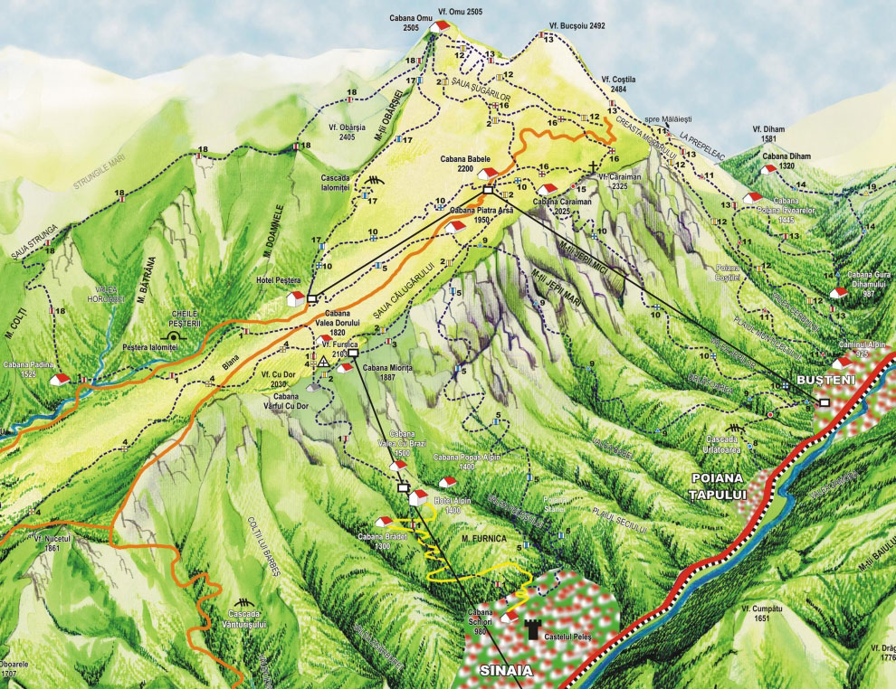

Parcul National Bucegi |
|
|
Cum puteti vizita? |
Cu masinaDâmboviţa Târgovişte – Fieni – Runculeţu – Valea Raciului
Prahova Ploieşti – Sinaia – Valea Izvorului – Păduchiosu – Cuibu Dorului – Dichiu
Brasov
Predeal – Pasul Râşnoava – Cabana Forban – Şaua Baiului – Poiana Izvoarelor
Telecabina
Sinaia – Cota 2000, Buşteni spre cabana Babele şi Hotel Peştera.
|
|  |
|
Creat de Sebastian Iacob - 2022 |